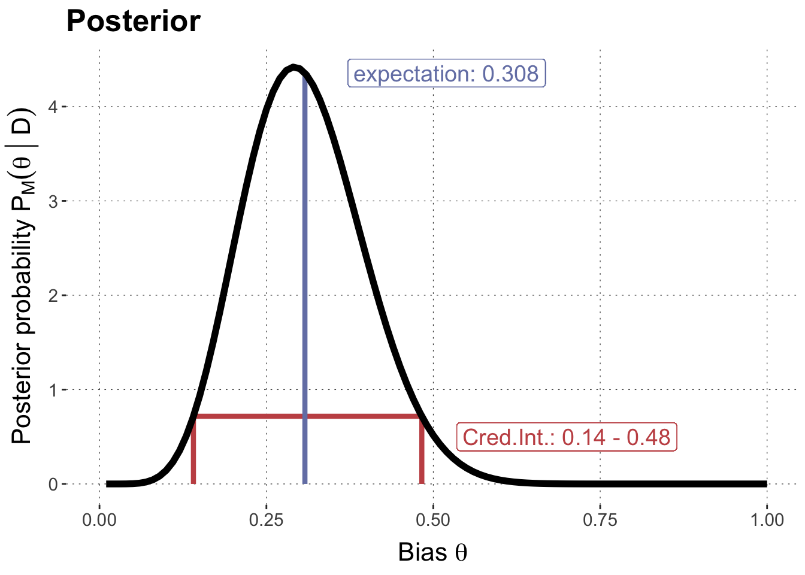
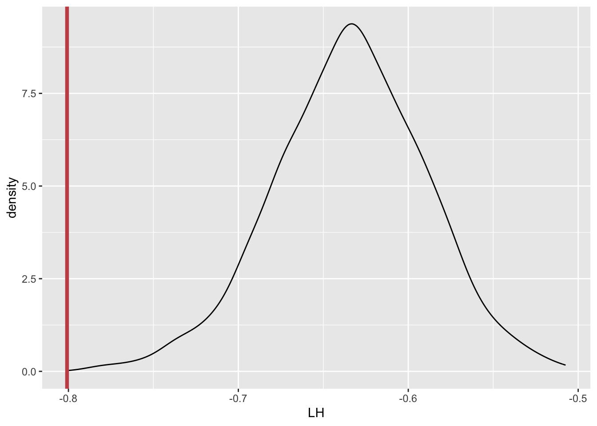
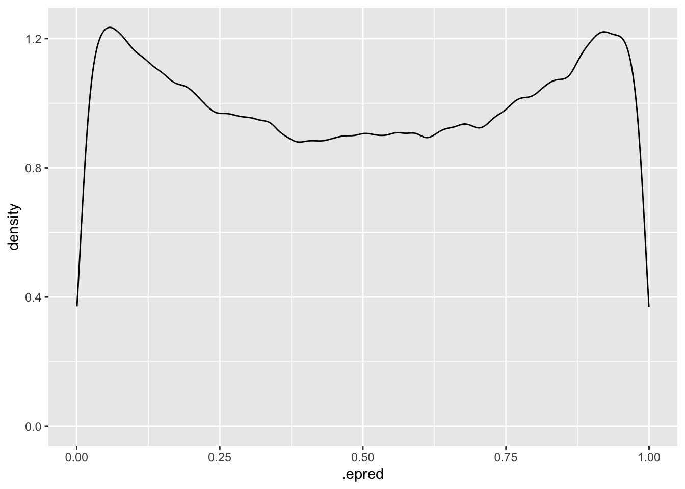

There are different ways of addressing research hypotheses with Bayesian models. For a more in-depth treatment see here. This unit gives code examples that showcase approaches to hypotheses testing based on the three pillars of BDA:
estimation,
model criticism, and
model comparison.
The running example is the 24/7 coin flip case (flipping a coin \(N=24\) times and observing \(k=7\) heads), addressing the research question that the coin is fair (\(\theta = 0.5\)).
Preamble
Here is code to load (and if necessary, install) required packages, and to set some global options (for plotting and efficient fitting of Bayesian models).
Toggle code
# install packages from CRAN (unless installed)pckgs_needed <-c("tidyverse","brms","rstan","rstanarm","remotes","tidybayes","bridgesampling","shinystan","mgcv")pckgs_installed <-installed.packages()[,"Package"]pckgs_2_install <- pckgs_needed[!(pckgs_needed %in% pckgs_installed)]if(length(pckgs_2_install)) {install.packages(pckgs_2_install)} # install additional packages from GitHub (unless installed)if (!"aida"%in% pckgs_installed) { remotes::install_github("michael-franke/aida-package")}if (!"faintr"%in% pckgs_installed) { remotes::install_github("michael-franke/faintr")}if (!"cspplot"%in% pckgs_installed) { remotes::install_github("CogSciPrag/cspplot")}# load the required packagesx <-lapply(pckgs_needed, library, character.only =TRUE)library(aida)library(faintr)library(cspplot)# these options help Stan run fasteroptions(mc.cores = parallel::detectCores())# use the CSP-theme for plottingtheme_set(theme_csp())# global color scheme from CSPproject_colors = cspplot::list_colors() |>pull(hex)# names(project_colors) <- cspplot::list_colors() |> pull(name)# setting theme colors globallyscale_colour_discrete <-function(...) {scale_colour_manual(..., values = project_colors)}scale_fill_discrete <-function(...) {scale_fill_manual(..., values = project_colors)}
Estimation-based testing
In estimation-based testing we use a single model \(M\), condition it on the observed data \(D\), and then ask whether the hypothesis is supported or discredited by the posterior. For point-valued hypothesis, like \(\theta = 0.5\), we can use region of practical equivalence (ROPE), following Kruschke. For example, we may consider a ROPE of \(0.5 \pm 0.01\). There are two salient methods:
comparison against a credible interval, and
direct inspection of the posterior probability.
Credible Intervals
The first approach compares the ROPE to an \(n\)% credible interval of the posterior. The plot below shows the posterior, starting from a flat prior, for our case. it also shows the 95% credible interval.
Toggle code
hdi = HDInterval::hdi(qbeta , shape1 =8 , shape2 =18 )hdiData <-tibble(theta =rep(hdi, each =2),post =c(0,dbeta(hdi, 8, 18), 0))expData <-tibble(theta =c(8/26,8/26),post =c(0,dbeta(8/26, 8, 18 )))tibble(theta =seq(0.01,1, by =0.01),posterior =dbeta(seq(0.01,1, by =0.01), 8, 18 )) %>%ggplot(aes(x = theta, y = posterior)) +xlim(0,1) +labs(x = latex2exp::TeX("Bias $\\theta$"),y = latex2exp::TeX("Posterior probability $P_{M}(\\theta \\, | \\, D)$"),title ="Posterior" ) +geom_line(data = hdiData, aes(x = theta, y = post), color = project_colors[2], size =1.5) +geom_label(x =0.7, y =0.5, label ="Cred.Int.: 0.14 - 0.48", color = project_colors[2], size =5) +geom_line(data = expData, aes(x = theta, y = post), color = project_colors[1], size =1.5) +geom_label(x =0.52, y =dbeta(8/26, 8, 18 ), label ="expectation: 0.308", color = project_colors[1], size =5) +geom_line(color ="black", size =2)

Posterior probability
Toggle code
k <-7N <-24ROPE <-c(0.49,0.51)# posterior probability of the ROPEpostProb_ROPE <-pbeta(ROPE[2],8,18) -pbeta(ROPE[1],8,18)# plotplotData <-tibble(theta =seq(0,1, length.out =200),posterior =dbeta(theta, 8, 18))plotData |>ggplot(aes(x = theta, y = posterior)) +geom_ribbon(aes(ymin=0, ymax=posterior), fill=project_colors[2],alpha=0.8, data=subset(plotData, theta >=0.485& theta <=0.515)) +geom_line(size =2) +xlim(0,1) +geom_label(x =0.75, y =0.5, label =str_c("Post. prob. ROPE: ", round(postProb_ROPE, 3)), color = project_colors[2], size =3) +labs(x = latex2exp::TeX("Bias $\\theta$"),y = latex2exp::TeX("Posterior probability $P_{M}(\\theta \\, | \\, D)$"),title ="Posterior" )
This is not a common approach (in fact, I have never seen this used in practive at all), but, in principle, we can use Bayesian \(p\)-values for hypothesis testing. Of course, if we consider a degenerate model with \(\theta = \theta^*\), this is frequentist testing. Let’s therefore explore a different route here and instead consider a Bayesian logistic regression model with a very strong prior assumption that \(\theta\) is sampled randomly from our ROPE (thus implementing a “distributional hypothesis”, but with a stupid, flat distribution over an interval) and then ask whether this model would be “surprised” by the 24/7 data.
First, we need to set up and obtain the model, from the prior point of view.
Toggle code
# data in a long formatdata_24_7 <-tibble(outcome =c(rep(1, 7), rep(0, 17)))# run logistic intercept-only regression model # with very narrow prior, taking only samples from the priorfit_logistic_prior <- brms::brm(formula = outcome ~1, data = data_24_7,family = brms::bernoulli(link ="logit"),# this is an extremely stupid "unBayesian prior" !!!# but it's the hypothesis we are interested inprior = brms::prior("uniform(0.49,0.51)", class ="Intercept", ub =0.51, lb =0.49),sample_prior ="only",iter =50000,warmup =1000)
We then collect samples from the prior predictive, obtain the likelihood for all of these and compare these to the likelihood of the data.
Toggle code
# collect samples from the prior-predictive distributionpriorPred_samples <- tidybayes::add_predicted_draws( fit_logistic_prior,newdata = data_24_7,ndraws =500,value ="prediction") # extract likelihood for observations (actual or repeat)get_LH <-function(observation, ndraws =1000) { LH_ys <- brms::log_lik(object = fit_logistic_prior,newdata =tibble(outcome = observation),ndraws = ndraws)mean(matrixStats::rowLogSumExps(LH_ys) -log(dim(LH_ys)[2]))}# get likelihood of predictive samples# (this may take a while!!)LH_postPred <- priorPred_samples |>group_by(.draw) |>summarize(LH_post_pred =get_LH(prediction)) |>pull(LH_post_pred)# get likelihood of dataLH_data <-get_LH(data_24_7$outcome)# Bayesian $p$-values with LH as test statisticprint(mean(LH_postPred < LH_data))
[1] 0
Toggle code
# plot the resultstibble(LH = LH_postPred) |>ggplot(aes(x = LH)) +geom_density() +geom_vline(aes(xintercept = LH_data), color = project_colors[2], size =1.5)

We find that, indeed, this model would be surprised by the data. Most of the data that the model predicts, is more likely than the data (from the point of view of the model). This can be interpreted as generalization of a \(p\)-value to an interval-based hypothesis, approximate by Monte Carlo sampling.
Comparison-based testing
While the previous approaches all just used one model, the logic of comparison-based testing is to compare two models: one model that expresses the relevant hypothesis, and another model that expresses a relevant alternative model. The choice of alternative is not innocuous, as we will see.
Bayes factors
First, we will explore comparison with Bayes Factors, in particular using the (generalized) Savage-Dickey method. Following this approach, we consider an encompassing model\(M_e\) which contains the (interval-based) null hypothesis \(I_0\) and its alternative \(I_1\) (in the sense that it puts positive probability on both). We can then compute the Bayes factor in favor of hypothesis \(I_0\) as:
\[
BF_{01} = \frac{\text{posterior odds of $I_0$ in $M_e$}}{\text{prior odds of $I_0$ in $M_e$}}
\]
Here is how we can calculate this for the 24/7 data using the Beta-binomial model:
Toggle code
# set the scenek <-7N <-24theta_null <-0.5epsilon <-0.01# epsilon margin for ROPEupper <- theta_null + epsilon # upper bound of ROPElower <- theta_null - epsilon # lower bound of ROPEalpha <-1# prior beta parameterbeta <-1# prior beta parameter# calculate prior odds of the ROPE-d hypothesisprior_of_hypothesis <-pbeta(upper, alpha, beta) -pbeta(lower, alpha, beta)prior_odds <- prior_of_hypothesis / (1- prior_of_hypothesis)# calculate posterior odds of the ROPE-d hypothesisposterior_of_hypothesis <-pbeta(upper, alpha + k, beta + (N-k)) -pbeta(lower, alpha + k, beta + (N-k))posterior_odds <- posterior_of_hypothesis / (1- posterior_of_hypothesis)# calculate Bayes factorbf_ROPEd_hypothesis <- posterior_odds / prior_oddsbf_ROPEd_hypothesis
[1] 0.5133012
And here is how this can be calculated using a logistic regression instead. We first set up the model and fit it to the data. We use a normal prior for the Intercept, with values that very roughly induces a uniform distribution on the a priori predicted central tendency (= coin bias). (NB: the prior predictive of central tendency in this model is a logit-normal distribution.) We use a lot of samples to achieve better accuracy of our estimates.
Toggle code
fit_logistic_posterior <- brms::brm(formula = outcome ~1, data = data_24_7,family = brms::bernoulli(link ="logit"),prior = brms::prior("normal(0,1.8)", class ="Intercept"),iter =50000,warmup =1000)
We then collect samples from the prior over parameters as well:
Let’s do a quick sanity check and visualize the prior distribution of the predictor of central tendency (the coin’s bias) implied by our choice of prior on the intercept:
Toggle code
# sanity check: prior distribution of central tendencyfit_logistic_prior |> tidybayes::add_epred_draws(newdata = data_24_7) |>ggplot(aes(x = .epred)) +geom_density()

We then approximate the probability of \(I_0\) and \(I_1\) from both the prior and posterior samples:
Exercise 4: Predictive \(p\)-values w/ SD as test statistic
Repeat these calculations for different priors on the intercept, in particular different standard deviations for the normal distribution. What do you see?
Solution
Changing the standard deviation (moderately) affects the numerical value we obtain, but not in a manner that would suggest different qualitative conclusions.
LOO
Toggle code
fit_logistic_alternative <- brms::brm(formula = outcome ~1, data = data_24_7,family = brms::bernoulli(link ="logit"),prior = brms::prior("normal(0,1.8)", class ="Intercept"),iter =50000,warmup =1000)fit_logistic_null <- brms::brm(formula = outcome ~1, data = data_24_7,family = brms::bernoulli(link ="logit"),prior = brms::prior("uniform(0.49,0.51)", class ="Intercept",lb=0.49, ub=0.51),iter =50000,warmup =1000)
elpd_diff se_diff
alternative 0.0 0.0
null -4.4 3.2
It seems that the alternative model is better.
Checking whether this difference is substantial:
Toggle code
1-pnorm(-loo_comp[2,1], loo_comp[2,2])
[1] 0.1192925
The brms::hypothesis function
The brms::hypothesis function allows you to test various hypotheses in a seemingly more streamlined and convenient manner. Here is how to use it. We first fit a model which collects prior and posterior samples.
Toggle code
# sample BOTH posterior and priorfit_logistic_post_and_prior <- brms::brm(formula = outcome ~1, data = data_24_7,family = brms::bernoulli(link ="logit"),prior = brms::prior("normal(0,1.8)", class ="Intercept"),iter =50000,warmup =1000,sample_prior ="yes")
Then we call the function to test a point-valued or an interval-based hypothesis. NB: for interval-based hypotheses, the input has to be an inequality, but a ROPE-based hypothesis is easily translated into an inequality.
Hypothesis Tests for class b:
Hypothesis Estimate Est.Error CI.Lower CI.Upper Evid.Ratio Post.Prob
1 (Intercept) = 0 -0.87 0.44 -1.77 -0.05 NA NA
Star
1 *
---
'CI': 90%-CI for one-sided and 95%-CI for two-sided hypotheses.
'*': For one-sided hypotheses, the posterior probability exceeds 95%;
for two-sided hypotheses, the value tested against lies outside the 95%-CI.
Posterior probabilities of point hypotheses assume equal prior probabilities.
Hypothesis Tests for class b:
Hypothesis Estimate Est.Error CI.Lower CI.Upper Evid.Ratio
1 (abs(Intercept-0.... < 0 1.36 0.44 0.66 2.11 0
Post.Prob Star
1 0
---
'CI': 90%-CI for one-sided and 95%-CI for two-sided hypotheses.
'*': For one-sided hypotheses, the posterior probability exceeds 95%;
for two-sided hypotheses, the value tested against lies outside the 95%-CI.
Posterior probabilities of point hypotheses assume equal prior probabilities.
Sadly, this function is fickle and its output can be misleading. It may be good advice to just stay away from it. Here is why.
First, if we test a point-valued hypothesis, and supply a model that has samples for both prior and posterior, it computes a Bayes Factor (using Savage-Dickey), which is displayed in the output as “Evidence Ratio”. Unfortunately, this does not work for some parameters, for which BRMS does not provide samples from the prior (when using ‘sample_prior = “yes”’; notice that we did extract prior sample using ‘sample_prior=“only”’ before). This includes our current case of a (naively construed) intercept-only model.
Second, when testing a directional hypothesis, the output shows the posterior odds in the field “Evidence Ratio” without taking the priors into account. This is misleading terminology and an unfortunate format of presentation.
Indeed, for our current running example, the function is not useful at all.